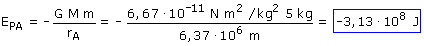

|
Hay que tomar el infinito como origen de potencial porque en el problema aparece un punto (B) muy alejado de la superficie terrestre a)  Cuando el cuerpo se desplace desde A hasta el infinito el campo gravitatorio realizará un trabajo de -3,13·108 J Resulta un trabajo negativo porque la fuerza se opone al desplazamiento (El planeta atrae a la masa m y esta se aleja de él) |